|
Yuqing Wang
I am a Ph.D. candidate at MMLab@HKU and
IDS@HKU, supervised by
Prof. Xihui Liu and
Prof. Yi Ma.
I am currently a research intern at ByteDance Seed, mentored by
Zhijie Lin.
I have been fortunate to collaborate with
Prof. Chunhua Shen and
Dr. Jiashi Feng.
My research centers on multimodal foundation models —
toward a single model that understands, generates, and reasons across any modality.
These days I focus on making unified models serve as world models.
Previously I worked on autoregressive visual generation, long video
generation, and instance segmentation.
Outside research, I love movies — especially sci-fi and mystery films.
My favorite director is Stanley Kubrick.
Email /
Google Scholar /
GitHub
|
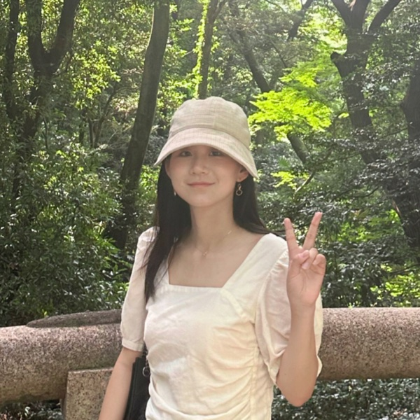
|
News
- [2026.05] Representation Forcing is released on arXiv.
- [2026.02] CubiD is accepted to CVPR 2026 as a Highlight.
- [2025.06] TokenBridge is accepted to ICCV 2025.
- [2025.02] PAR is accepted to CVPR 2025 as a Highlight.
|
|
Publications
(* denotes equal contribution)
|
|
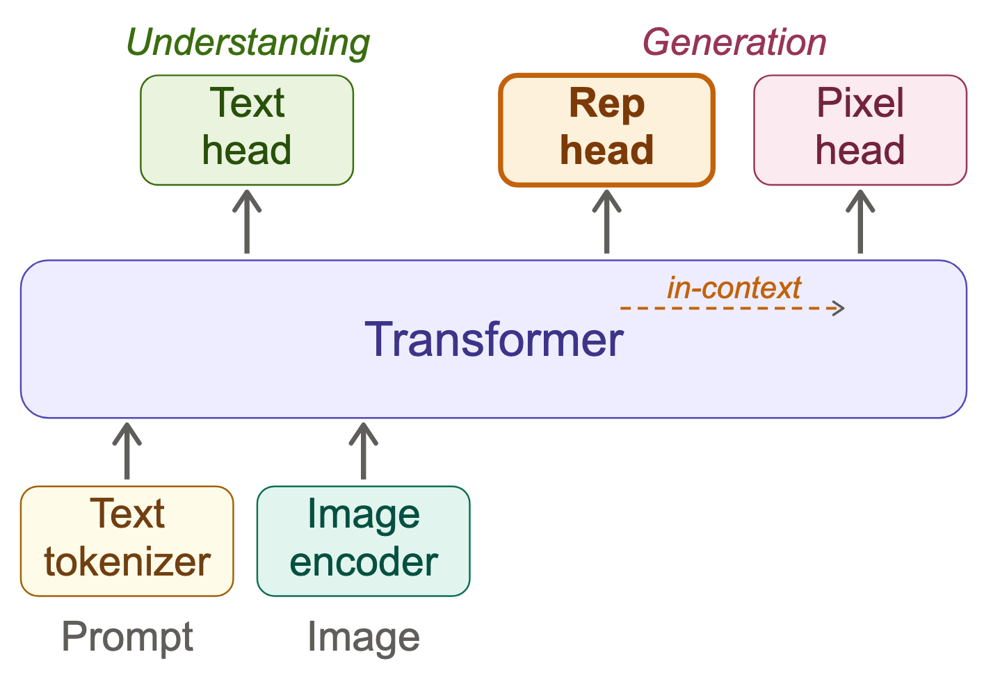
|
Representation Forcing for Bottleneck-Free Unified Multimodal Models
Yuqing Wang, Zhijie Lin, Ceyuan Yang, Yang Zhao, Fei Xiao, Hao He, Qi Zhao, Zihan Ding, Fuyun Wang, Shuai Wang, Youliang Zhang, Haoqi Fan, Xihui Liu
arXiv, 2026
paper / project page
Building unified multimodal models in a unified representation space without information bottlenecks.
|
|
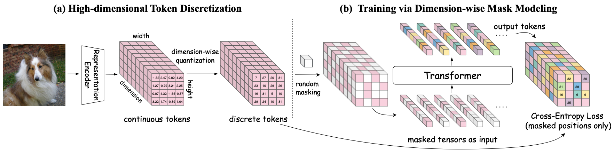
|
CubiD: Discrete Visual Generation on High-Dimensional Representation Tokens
Yuqing Wang, Chuofan Ma, Zhijie Lin, Yao Teng, Lijun Yu, Shuai Wang, Jiaming Han, Jiashi Feng, Yi Jiang, Xihui Liu
CVPR, 2026 (Highlight, top 12%)
paper / code
Discrete visual generation on high-dimensional representation tokens.
|
|
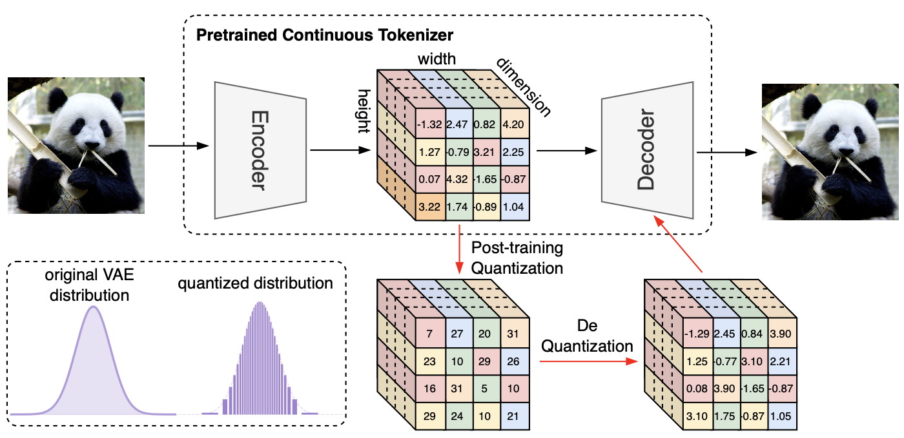
|
TokenBridge: Bridging Continuous and Discrete Tokens for Autoregressive Visual Generation
Yuqing Wang, Zhijie Lin, Yao Teng, Yuanzhi Zhu, Shuhuai Ren, Jiashi Feng, Xihui Liu
ICCV, 2025
paper / project page / code
Bridging continuous and discrete tokens to close the gap between autoregressive and diffusion models.
|
|
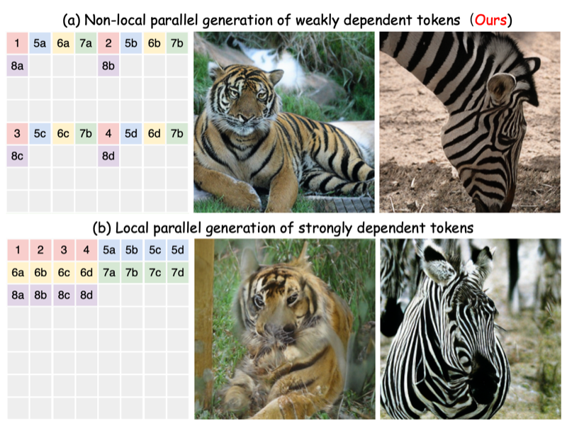
|
Parallelized Autoregressive Visual Generation
Yuqing Wang, Shuhuai Ren, Zhijie Lin, Yujin Han, Haoyuan Guo, Zhenheng Yang, Difan Zou, Jiashi Feng, Xihui Liu
CVPR, 2025 (Highlight, top 12%)
paper / project page / code
Accelerating visual generation through parallelized autoregressive prediction.
|
|
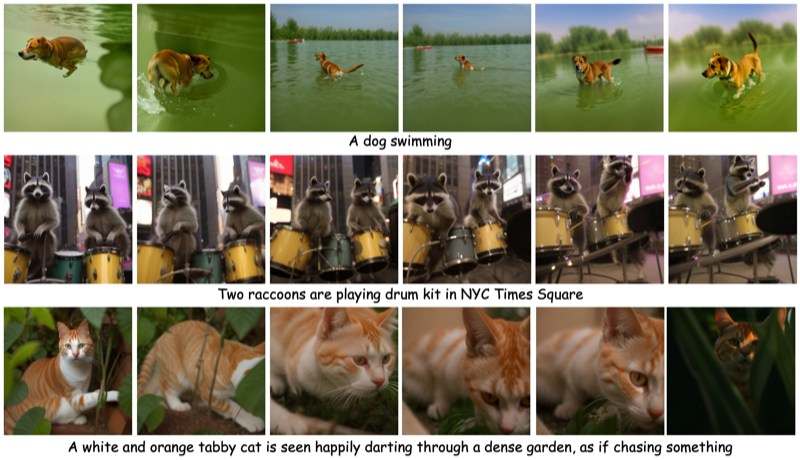
|
Loong: Generating Minute-level Long Videos with Autoregressive Language Models
Yuqing Wang, Tianwei Xiong, Daquan Zhou, Zhijie Lin, Yang Zhao, Bingyi Kang, Jiashi Feng, Xihui Liu
arXiv, 2024
paper / project page
Minute-level long video generation with autoregressive language models.
|
|
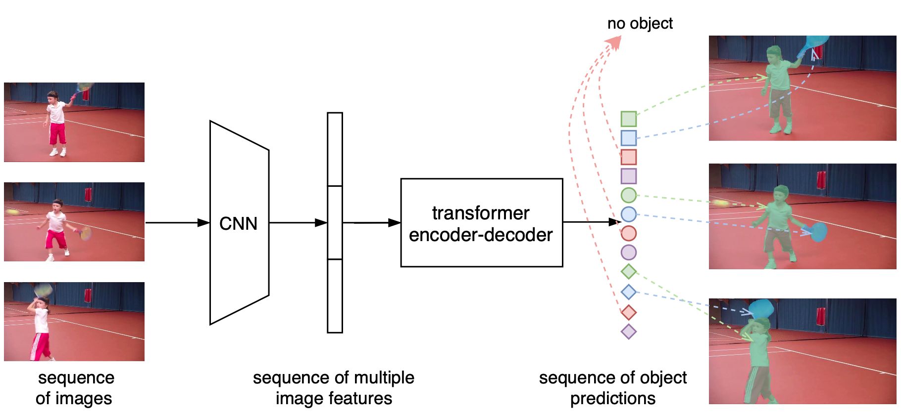
|
End-to-End Video Instance Segmentation with Transformers
Yuqing Wang, Zhaoliang Xu, Xinlong Wang, Chunhua Shen, Baoshan Cheng, Hao Shen, Huaxia Xia
CVPR, 2021 (Oral, top 2%)
paper / code
The first Transformer-based video instance segmentation method.
|
|
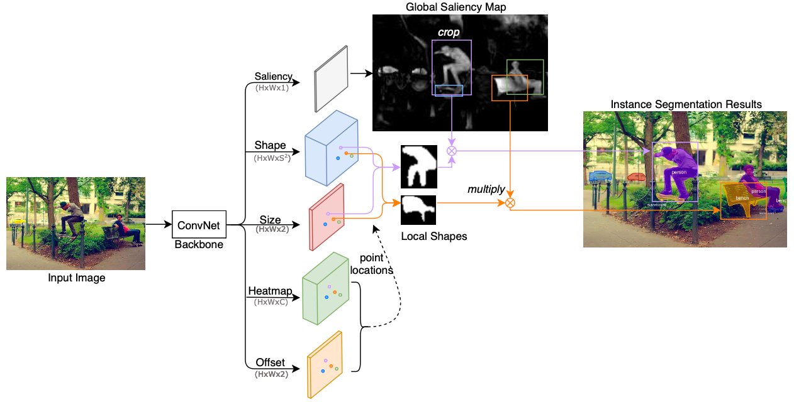
|
CenterMask: Single Shot Instance Segmentation with Point Representation
Yuqing Wang, Zhaoliang Xu, Hao Shen, Baoshan Cheng, Lirong Yang
CVPR, 2020
paper
|
|
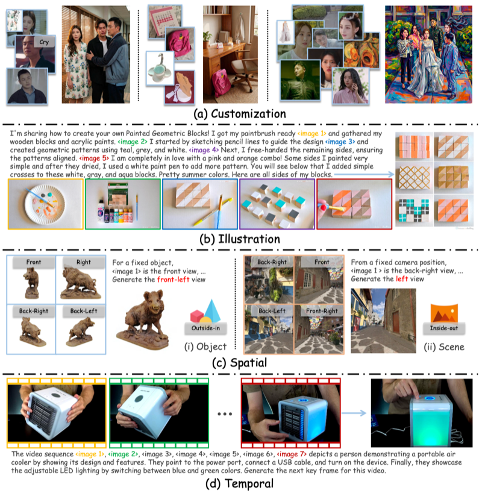
|
MACRO: Advancing Multi-Reference Image Generation with Structured Long-Context Data
Zhekai Chen*, Yuqing Wang*, Manyuan Zhang, Xihui Liu
arXiv, 2026
paper / project page / code
|
|
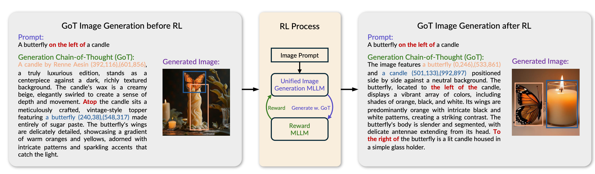
|
GoT-R1: Unleashing Reasoning Capability of MLLM for Visual Generation with Reinforcement Learning
Chengqi Duan*, Rongyao Fang*, Yuqing Wang*, Kun Wang, Linjiang Huang, Xingyu Zeng, Hongsheng Li, Xihui Liu
ICLR, 2026
paper / code
|
|
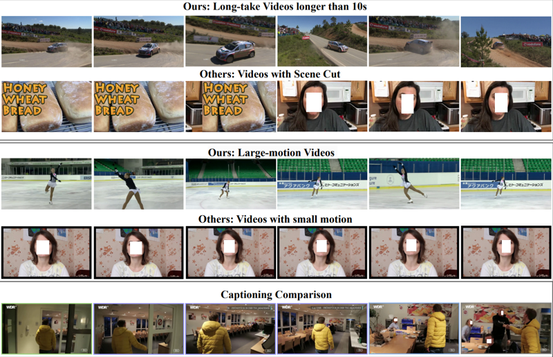
|
LVD-2M: A Long-take Video Dataset with Temporally Dense Captions
Tianwei Xiong*, Yuqing Wang*, Daquan Zhou, Zhijie Lin, Jiashi Feng, Xihui Liu
NeurIPS, 2024
paper / project page / code
|
|
Service
Reviewer for CVPR, ICCV, NeurIPS, and TMLR.
Outstanding Reviewer, CVPR 2025.
|
|